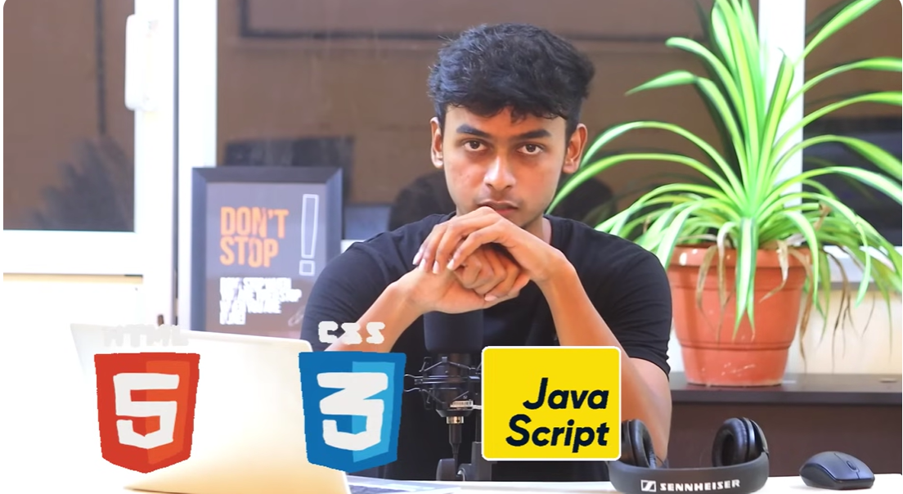

In this video, I will explain what full stack development is and provide a detailed overview of the technologies used to build full stack web applications. Full stack web development involves building the front-end, back-end, and database components of a web application. This means that full stack developers are responsible for everything from designing the user interface to managing the server-side logic and database. I will begin by discussing the key technologies and programming languages used in full stack web development, including HTML, CSS, JavaScript, Node.js, and various front-end frameworks such as React and Angular. I will then move on to discuss the server-side technologies like Python, Java and Node Js, and databases like MySQL, MongoDB, and Aws.
| CSS | JavaScript |
| html | Node Js |
Thank you for watching the video! If you have any questions or would like to learn more about full stack web development, please feel free to reach out to us. We are always happy to help and provide guidance on your learning journey. Don't forget to subscribe to our channel for more informative videos on web development and programming. Happy coding! 😊
back to Register